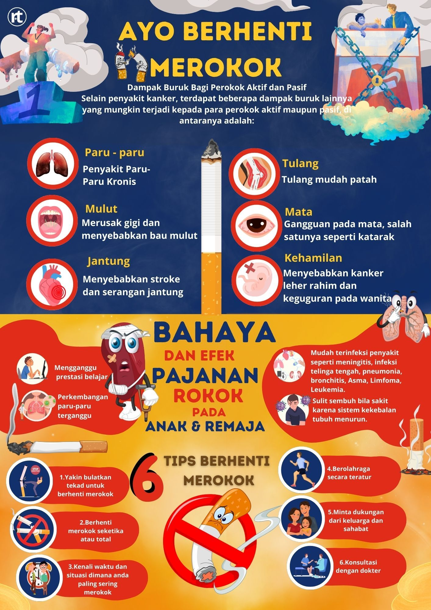

Penyakit Maag
Maag atau dalam istilah medis disebut sebagai gastritis, adalah peradangan pada lapisan lambung yang menyebabkan rasa sakit atau ketidaknyamanan di perut. Maag dapat disebabkan oleh berbagai faktor, termasuk pola makan yang buruk, stres, infeksi bakteri, dan penggunaan obat-obatan tertentu seperti obat antiinflamasi nonsteroid (NSAID).
Tanda dan Gejala Maag
Berikut adalah beberapa tanda dan gejala umum dari penyakit maag:
- Pusing
- Mual
- Nyeri perut
- Lemas
- Demam
- Berat badan menurun
- Seperti di tusuk
- Batuk
- Rasa panas di tenggorokan
- Cemas
Faktor Penyebab yang Memperburuk Maag:
- Pola makan tidak teratur atau mengonsumsi makanan pedas dan asam.
- Stres berlebihan atau kelelahan fisik.
- Kebiasaan merokok atau konsumsi alkohol.
- Penggunaan obat tertentu, seperti NSAID (misalnya ibuprofen atau aspirin) yang dapat mengiritasi lambung.
Jika gejala maag berlanjut atau semakin parah, segera konsultasikan dengan dokter untuk diagnosis dan penanganan yang tepat.
Pencegahan Maag
Untuk mencegah atau mengurangi risiko terkena maag, berikut adalah beberapa langkah yang dapat dilakukan:
- Makan dengan teratur: Makan dalam porsi kecil tapi sering untuk menghindari produksi asam lambung berlebih.
- Hindari makanan yang dapat mengiritasi lambung: Kurangi konsumsi makanan pedas, berlemak, atau terlalu asam.
- Kurangi stres: Cobalah teknik relaksasi, seperti meditasi atau yoga, untuk mengurangi tingkat stres.
- Jangan merokok atau konsumsi alkohol berlebihan: Kebiasaan ini dapat merusak lapisan pelindung lambung.
- Perhatikan penggunaan obat-obatan: Hindari penggunaan obat antiinflamasi dalam jangka panjang tanpa resep dokter.
Catatan:
Jika Anda mengalami gejala-gejala maag yang berkelanjutan atau semakin memburuk, seperti nyeri perut yang parah atau muntah darah, segera periksakan diri ke dokter. Pengobatan maag dapat dilakukan dengan obat-obatan yang mengurangi produksi asam lambung atau melindungi lapisan lambung dari iritasi lebih lanjut.
Tonton Video
